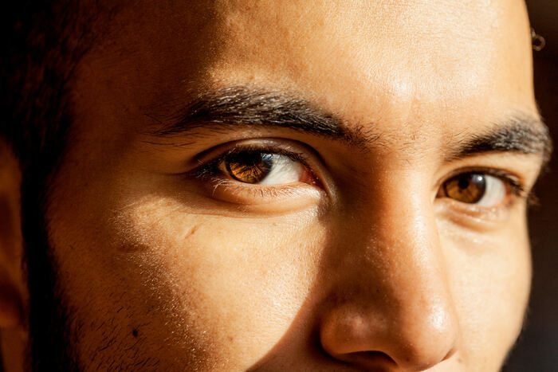
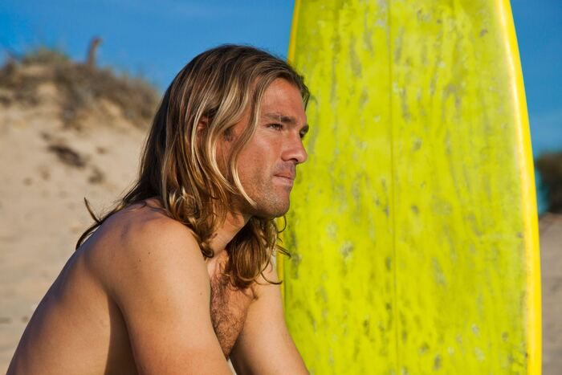
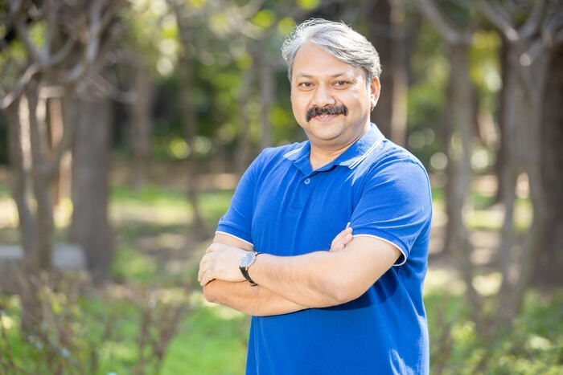

Lina’s dateTask 1
First datesTalk with a partner.
Task 2
Words in the storyMatch the words to their meanings.
a. going to do something in the future · b. a funny film about love · c. you say this before exciting news · d. friendly and nice to talk with · e. spend romantic time together Task 3
Lina's newsRead quickly. Was it a good date or a bad date? Lina calls her friend Noor.
Lina: Hey Noor, guess what? I went on a date last night! Noor: Really? That's exciting! How did it go? Lina: It was really nice! We went to a nice café. Noor: Oh, nice! What does he look like? Lina: Well, he's tall with brown hair and green eyes. And he has a beard. Noor: Sounds nice! What did you do at the café? Lina: We talked a lot and had coffee. He's really funny and easy to talk to. Noor: That sounds great! Did you like him? Lina: Yeah, I think so! We're planning to go out again next week. I need to think of what we will do! Noor: That's wonderful, Lina! I'm happy for you. Lina: Thanks, Noor! It was fun. Speed
The date was… Read again. Answer the questions.
Task 4
The second dateIn groups: where should Lina go on her second date? Choose one place and say why.
Task 5
Lina's planRead Lina and Marco's chat. Was your group right? Answer the questions. Lina calls Marco.
Lina: Hey, Marco! I had a great time yesterday. Marco: Me too, Lina! I really enjoyed talking to you. Lina: I'm happy to hear that! How about we go out again next Saturday afternoon? There's a new romantic comedy at the cinema, and I think it would be fun to see it together. The film starts at 3 p.m. Marco: That sounds like a good idea! What's the film called? Lina: It's called Second Chances. I heard it's really sweet and funny. We could eat something before the film too. There's a nice Italian restaurant near the cinema. How about we meet there at 2 p.m.? Marco: Italian sounds great! 2 p.m. next Saturday works for me. I'll be there. Speed
Task 6
What does he look like?Lina says: He's tall with brown hair and green eyes. And he has a beard. Match the words to the pictures. A B C  DE F has + hair, eyes, a beard, a moustache: He has curly hair. is + tall, short, bald, slim: She is tall. wears + glasses: He wears glasses. long + straight + black + hair · size, then style, then colour Task 7
Two questionsWhich question does each answer go with? A. What does he/she look like? B. What is he/she like?
Task 8
has, is or wears?Choose the right word.
Task 9
What do they look like?Write one sentence for each person. Example: Leo has long blond hair.  LeoHana Omar  RaviSofia Mia and Ben Task 10
Who is it?In pairs: describe a friend or someone in your family. Your partner draws them. Then describe someone in this room. Don't say the name. Can your partner guess? Use: He has… · She is… · He wears… Trainer notes Tutor only | ||||||||||||||||||||||||||||||||||||||||||||||